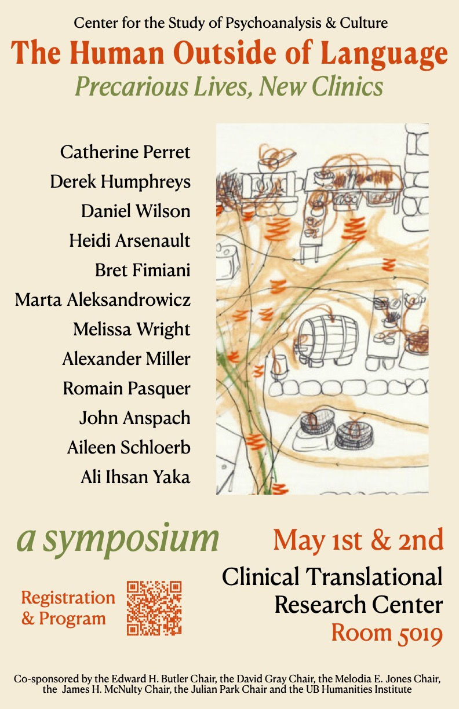

2 MAYIS 2026 • BUFFALO, NY
CSPC Sempozyumu: Dildeki Paranoit Boyut ve Soykırım
University at Buffalo CSPC Sempozyumu: “Conceptualizing Êzidî Femicide as Communicide: Psychoanalytic Reflections on the Paranoiac Dimension of Language in Genocide.”
Ayrıntıları İncele →